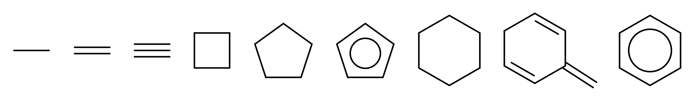
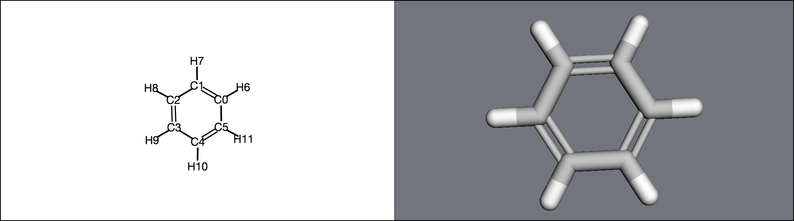
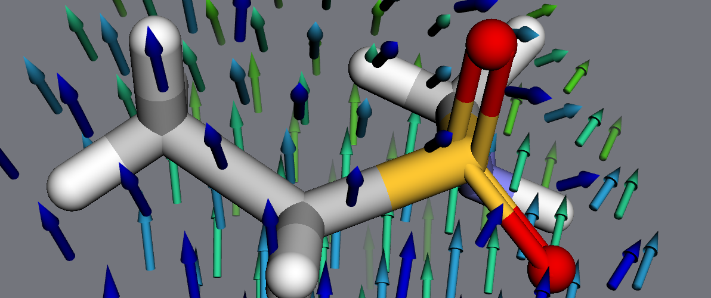
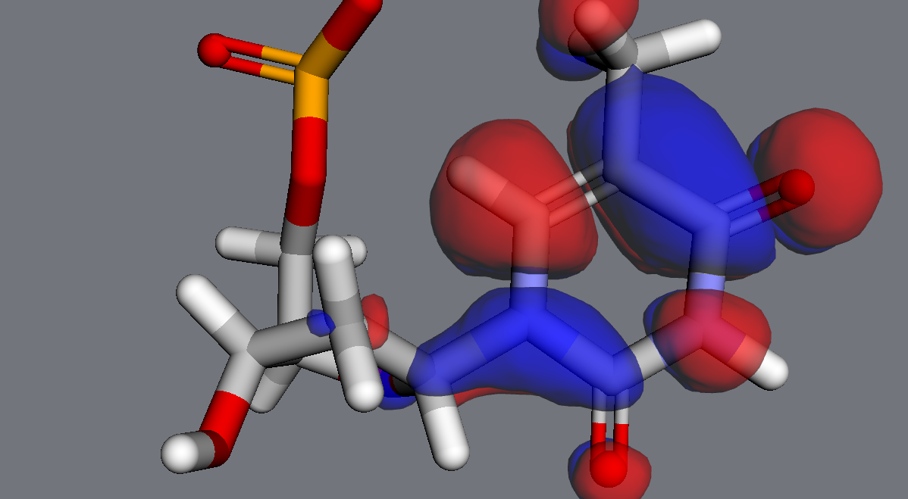

2. Molecular structure¶
MDT is built around python objects that try to mirror their physical counterparts. For instance,
a Molecule‘s atoms are a list at molecule.atoms; its mass is stored at molecule.mass and
its charge at molecule.charge. Atoms, similarly,
have an atomic number (atom.atnum), a mass (atom.mass), a position (atom.position), and
a momentum (atom.momentum).
These properties are interrelated - for instance, changing an atom’s mass will also affect its molecule’s total mass. As much as possible, MDT will automatically take care of this bookkeeping for you.
Below is a quick rundown of those objects and how they relate to one another.
- For most of the examples here, we’ll look at a benzene molecule, which you can create as follows:
>>> import moldesign as mdt, moldesign.units as u >>> benzene = mdt.from_name('benzene')
2.1. Atoms¶

An Atom object contains physical information,
>>> atom = mdt.Atom('C')
>>> atom.atomic_number
6
>>> atom.mass
12.0 * u.amu
>>> atom.position
[0.0, 0.0, 0.0] * u.angstrom
the bonds it’s involved in,
>>> atom = benzene.atoms[0]
>>> atom.bonds
[<Bond: C3 (#3) - C4 (#4) (order: 1)>,
<Bond: C2 (#2) - C3 (#3) (order: 2)>,
<Bond: C3 (#3) - H9 (#9) (order: 1)>]
>>> atom.bond_graph
{<Atom C2 (elem C), index 2 in molecule Molecule: benzene>: 2,
<Atom C4 (elem C), index 4 in molecule Molecule: benzene>: 1,
<Atom H9 (elem H), index 9 in molecule Molecule: benzene>: 1}
and contains references to the larger structures it belongs to.
>>> mol = mdt.from_pdb('3fpp')
>>> atom = mol.atoms[0]
>>> atom
<Atom N (elem N), index 0 (res PRO43 chain A) in molecule Molecule: 3fpp>
>>> atom.molecule
<3fpp (Molecule), 4097 atoms>
>>> atom.residue
<Residue PRO43 (index 0, chain A) in Molecule: 3fpp>
>>> atom.chain
<Chain A in Molecule: 3fpp>
2.2. Bonds¶
An iterator over a molecule’s bonds is stored at molecule.bonds:
>>> list(benzene.bonds)
[<Bond: C4 (#4) - H10 (#10) (order: 1)>,
<Bond: C4 (#4) - C5 (#5) (order: 2)>,
...]
Each bond contains references to the two bonded atoms, and the Lewis structure bond order:
>>> bond = list(benzene.bonds)[0]
>>> bond
<Bond: C3 (#3) - C4 (#4) (order: 1)>
>>> bond.a1
<Atom C3 (elem C), index 3 in molecule Molecule: benzene>
>>> bond.a2
<Atom C4 (elem C), index 4 in molecule Molecule: benzene>
>>> bond.order
1
If you have one atom in a bond, and need to get the other atom, use the bond.partner method:
>>> atom = benzene.atoms[0]
>>> atom
<Atom C0 (elem C), index 0 in molecule Molecule: benzene>
>>> bond = atom.bonds[0]
>>> bond.partner(atom)
<Atom C1 (elem C), index 1 in molecule Molecule: benzene>
Bonding information can also be accessed as a bond graph:
>>> benzene.bond_graph
{<Atom C1 (elem C), index 1 in molecule Molecule: benzene>:
{<Atom C0 (elem C), index 0 in molecule Molecule: benzene>: 2,
<Atom C2 (elem C), index 2 in molecule Molecule: benzene>: 1,
<Atom H7 (elem H), index 7 in molecule Molecule: benzene>: 1},
<Atom C0 (elem C), index 0 in molecule Molecule: benzene>:
{<Atom C1 (elem C), index 1 in molecule Molecule: benzene>: 2,
...},
...}
2.3. Molecules¶
You’ll spend most of your time in MDT working with Molecules - which, technically, represent completely molecular systems.
Each Molecule contains a list of Atoms.
>>> len(benzene.atoms)
12
>>> atom = benzene.atoms[3]
>>> atom.index
3
The 3D positions and momenta of all atoms in a molecule are stored as an Nx3 array:
>>> benzene.positions
<Quantity([[-0.76003939 1.16931777 0.02273989]
[ 0.63314801 1.24365634 -0.01297972]
..., 'ang')>
>>> benzene.momenta
<Quantity([[ 0. 0. 0.]
[ 0. 0. 0.]
..., 'amu * ang / fs')>
2.4. Molecular properties¶

Molecular properties are quantities
that have been calculated by an energy model at the
molecule’s current position.
For instance: if forces on the molecule have been calcualted, they are stored in an Nx3 array similarly to positions and momenta. However, they must first be calculated by an EnergyModel:
>>> benzene.forces
Traceback ...
NotCalculatedError: The 'forces' property hasn't been calculated yet. Calculate it with the molecule.calculate_forces() method
>>> benzene.set_energy_model(mdt.models.GAFF, charges='am1-bcc')
>>> benzene.calculate_forces()
>>> benzene.forces
<Quantity([[ -1.25171801e-01 1.93601314e-01 9.20898239e-04]
..., 'eV / ang')>
Any quantities calculated by the energy model are stored in molecule.properties:
>>> benzene.properties
{'am1-bcc': ...,
'forces': ...,
'potential_energy': ...,
'positions': ...}
Properties almost always include potential_energy; other common properties include
forces, wfn, and dipole. Calling mol.calculate() will only calculate the model’s
default quantities (see model.DEFAULT_PROPERTIES for a given model). Additional properties,
if available, can be requested via mol.calculate(requests=[prop1, prop2, ...])
- Note:
These properties are only accessible if they correspond to the molecule’s current position - MDT will raise
NotCalculatedErrorif you try to access properties at a new position without explicitly asking for a calculation.>>> benzene.calculate() >>> benzene.potential_energy -6201.2054456 * u.eV >>> mdt.set_angle(benzene.atoms[0], benzene.atoms[1], benzene.atoms[2], 5.0*u.degrees) >>> benzene.potential_energy Traceback (most recent call last): ... NotCalculatedError: The 'potential_energy' property hasn't been calculated yet. ... >>> benzene.calculate_potential_energy() -6200.9382913 * u.eV
2.5. Electronic structure¶

If you’ve run an quantum chemistry calculation on a molecule, its electronic structure will also
be available. This information is accessible through:
mol.wfn (see its documentation for more details).
>>> mol.set_energy_model(mdt.models.RHF, basis='sto-3g')
>>> mol.calculate()
>>> wfn = benzene.wfn
>>> wfn.aobasis
<BasisSet (sto-3g) of Molecule: benzene>
>>> wfn.orbitals
{'atomic': <BasisSet (sto-3g) of Molecule: benzene>,
'canonical': <36 canonical MolecularOrbitals in None/sto-3g wfn>}